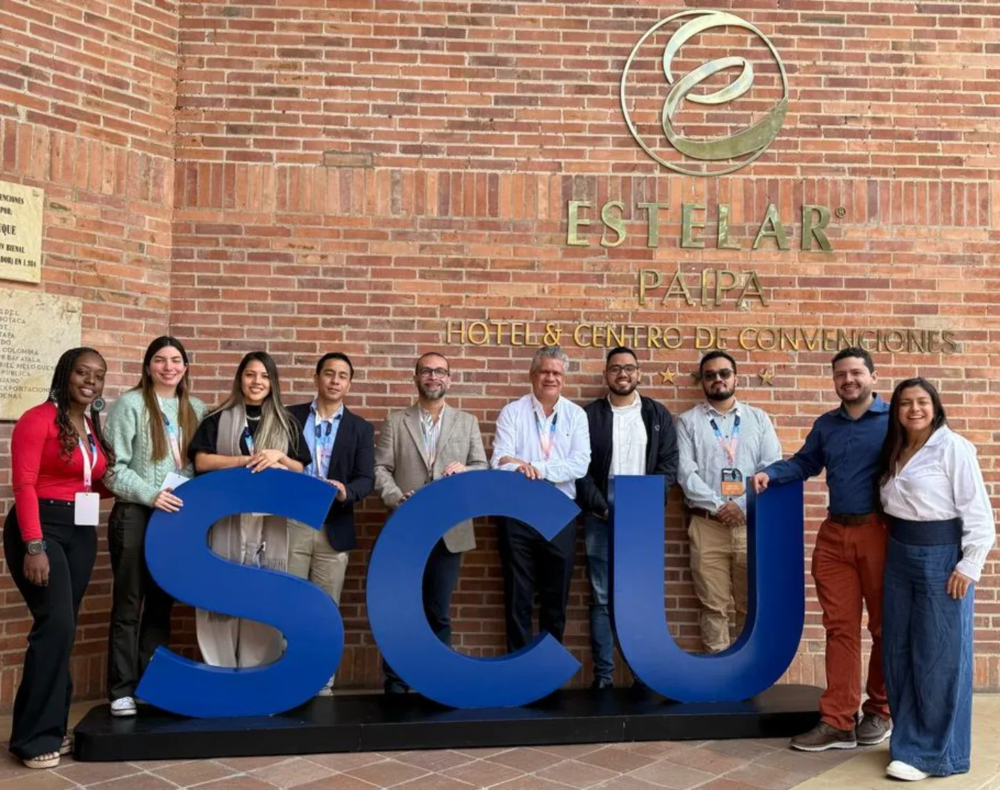
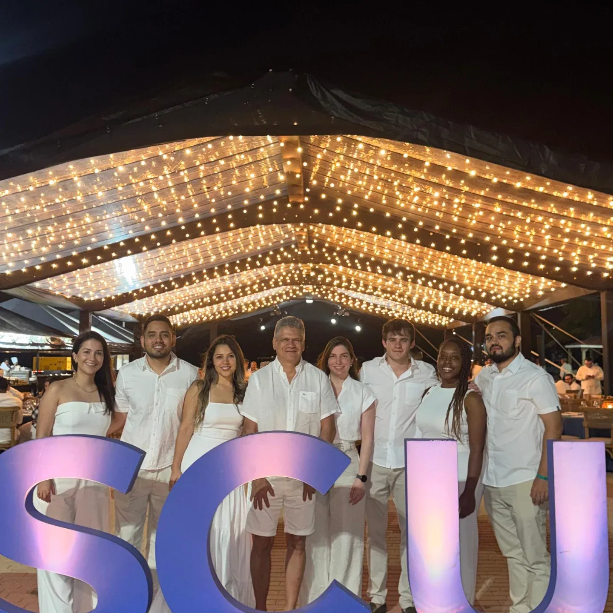
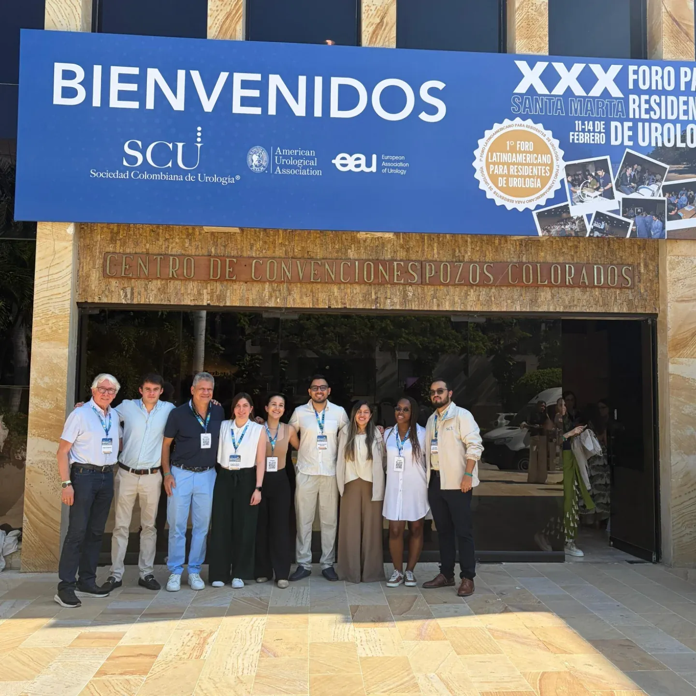
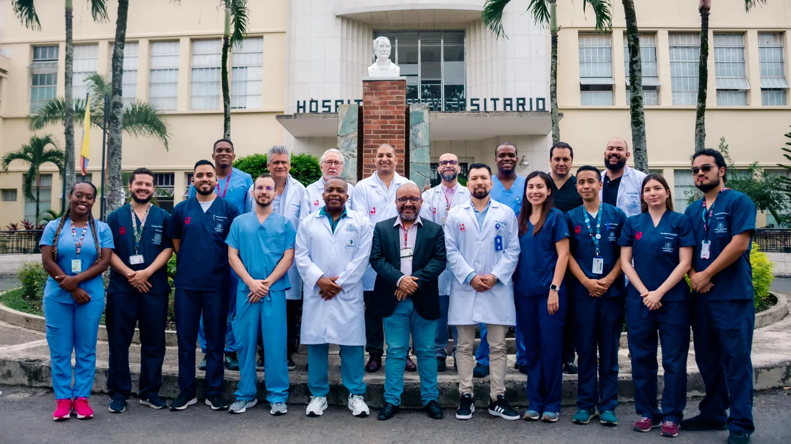

Urología · Universidad del Valle
¡Te damos la bienvenida!
Este es tu espacio de aprendizaje en urología. Aquí aprenderás resolviendo casos clínicos reales, junto a tu grupo.




Metodología
Aprendizaje Basado en Problemas
En esta metodología el problema llega antes que la teoría. En lugar de memorizar contenidos, aprenderás a partir de situaciones clínicas como las que enfrentarás en tu práctica profesional.
¿Cómo funciona?
Encontrarás un caso
Cada módulo inicia con un escenario clínico que debes analizar.
Analizarás en equipo
Con tu grupo identificarás lo que ya sabes y lo que necesitas aprender.
Seleccionarás y estudiarás
Buscarás fuentes confiables y estudiarás de forma independiente.
Resolverás el caso
Volverás a tu grupo para integrar lo aprendido y proponer una solución.
Tu tutor te acompañará y orientará la discusión, pero tú serás quien lidere tu propio aprendizaje.
Contenido